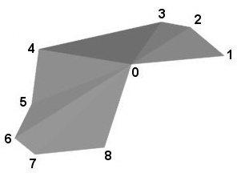

Table 11.1
In the HTML, change the hyperlink for 11.5 to "#SupportLevels".
11.3.2, Node signature
Insert the following new field definition as the first field:
“MFNode [in,out] attrib [] [X3DVertexAttributeNode]”
Append the range "[X3DColorObject]" to the definition of the color field.
Append the range "[X3DCoordinateNode]" to the definition of the coord field.
Insert the following new field definition after the coord field:
“SFNode [in,out] fogCoord [] [FogCoordinate]”
Append the range "[X3DNormalNode]" to the definition of the normal field.
Append the range "[X3DTextureCoordinateNode]" to the definition of the texCoord field.
11.3.2
Append the following text as new paragraphs:
“If the attrib field is not empty it shall contain a list of per-vertex attribute information for programmable shaders as specified in 32.2.2.4 Per-vertex attributes.
If the fogCoord field is not empty, it shall contain a list of per-vertex depth values for calculating fog depth as specified in 24.2.2.5 Fog colour calculation.”
11.4.4, Node signature
Insert the following new field definition as the first [in,out] field in the node signature:
“MFNode [in,out] attrib [] [X3DVertexAttributeNode]”
Insert the following new field definition after the coord field:
“SFNode [in,out] fogCoord [] [FogCoordinate]”
11.4.4, 3rd paragraph, last sentence
Replace the existing sentence with the following text:
“The width and style of lines are determined by the line properties specified in an associated Appearance node. If no line properties are specified, the default values for fields of the LineProperties node shall be used (see 12.4.3 LineProperties).”
11.4.5, Node signature
Insert the following new field definition as the first [in,out] field in the node signature:
“MFNode [in,out] attrib [] [X3DVertexAttributeNode]”
Insert the following new field definition after the coord field:
“SFNode [in,out] fogCoord [] [FogCoordinate]”
11.4.6, Node signature
Insert the following new field definition as the first [in,out] field in the node signature:
“MFNode [in,out] attrib [] [X3DVertexAttributeNode]”
Insert the following new field definition after the coord field:
“SFNode [in,out] fogCoord [] [FogCoordinate]”
Remove the text "or -1" from the range specification for the set_index and index fields.
11.4.6, 1st paragraph, penultimate sentence
Append the missing period.
11.4.6, last paragraph, 1st sentence
Replace the first sentence with the following text:
"The solid field determines whether the IndexedTriangleSet is visible when viewed from the backside."
11.4.7, Node signature
Insert the following new field definition as the first [in,out] field in the node signature:
“MFNode [in,out] attrib [] [X3DVertexAttributeNode]”
Insert the following new field definition after the creaseAngle field:
“SFNode [in,out] fogCoord [] [FogCoordinate]”
Remove creaseAngle field.
Insert the following new field definition after the ccw field:
“SFBool [] colorPerVertex TRUE”
11.4.8, Node signature
Insert the following new field definition as the first [in,out] field in the node signature:
“MFNode [in,out] attrib [] [X3DVertexAttributeNode]”
Insert the following new field definition after the coord field:
“SFNode [in,out] fogCoord [] [FogCoordinate]”
Move the metadata field to precede the vertexCount field.
11.4.8, last paragraph, last sentence
Replace the existing sentence with the following text:
“The width and style of lines are determined by the line properties specified in an associated Appearance node. If no line properties are specified, the default values for the fields of the LineProperties node shall be used (see 12.4.3 LineProperties).”
11.4.9, Node signature
In the vector field, change the allowed range to "[-1,1]".
11.4.10, Node signature
Insert the following new field definition as the first [in,out] field in the node signature:
“MFNode [in,out] attrib [] [X3DVertexAttributeNode]”
Insert the following new field definition after the coord field:
“SFNode [in,out] fogCoord [] [FogCoordinate]”
11.4.11, Node signature
Insert the following new field definition as the first [in,out] field in the node signature:
“MFNode [in,out] attrib [] [X3DVertexAttributeNode]”
Insert the following new field definition after the fanCount field:
“SFNode [in,out] fogCoord [] [FogCoordinate]”
11.4.11, Figure 11.1
Replace the figure with the following figure:

11.4.12, Node signature
Insert the following new field definition as the first [in,out] field in the node signature:
“MFNode [in,out] attrib [] [X3DVertexAttributeNode]”
Insert the following new field definition after the coord field:
“SFNode [in,out] fogCoord [] [FogCoordinate]”
11.4.12, 2nd paragraph
Replace two occurrences of "coordinate node" with "Coordinate node".
11.4.12, 2nd paragraph, last sentence
Replace the existing sentence with the following text:
“If the coordinate node does not contain a multiple of three coordinate values, the remaining vertices shall be ignored.”
11.4.12, 3rd paragraph
Remove the third and fourth sentences.
11.4.12, 5th paragraph
Replace the first sentence with the following text:
"The solid field determines whether the TriangleSet is visible when viewed from the backside."
11.4.13, Subclause number
Replace the subclause heading for the TriangleStripSet node to the following:
11.4.13, Node signature
Insert the following new field definition as the first [in,out] field in the node signature:
“MFNode [in,out] attrib [] [X3DVertexAttributeNode]”
Insert the following new field definition after the coord field:
“SFNode [in,out] fogCoord [] [FogCoordinate]”
11.5
In the HTML, change the bookmark for 11.5 to "SupportLevels".